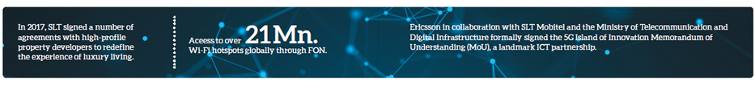

Business partner capital
As outlined in the above sections, SLT, as the national ICT service provider provides ICT services to the Government and domestic and enterprise customers in Sri Lanka. During the year, we signed or renewed a number of significant contracts with diverse local and global enterprises. We also worked with a number of business partners to construct a business ecosphere of coexistence, co-innovation, and collaboration. We share reciprocal relationships and mutual successes with all our partners. A list of our business partnerships with entreprise and the Government is mentioned in the section “New enterprise business ICT solutions and MoUs”.
New strategic alliances, collaborations and joint ventures
The following are some selected alliances, collaborations, and joint-ventures of the SLT Group in 2017:
SLT and Ubique Networks to provide a lagless gaming experience
SLT partnered with Ubique Networks Inc., a Canadian eSports company, to launch South Asia’s first ultimate eSports platform to provide a complete and lagless gaming experience for gamers and fans in Sri Lanka. It is the only platform that completely integrates a network technology to tackle one of the major irritants for eSports players, tournament organisers, and publishers – lag. Ubique’s proprietary global lagless infrastructure IQNet – The International Certification Network geo-optimises the game servers in real time to deliver the ultimate gaming experience for gamers.
Partnerships with high-end property developers
In 2017, SLT signed a number of agreements with high-profile property developers to redefine the experience of luxury living. SLT entered into agreements with Indocean Developers (Pvt) Limited, currently developing the iconic Altair building in Colombo, and the Colombo City Centre (CCC), to provide fibre infrastructure with broadband services up to the speed of 100 Mbps and high definition television content. SLT will also offer smart living and smart building solutions to the residents of these landmark properties.
SLT partners with Fon for global Wi-Fi connectivity and roaming
The SLT Group signed an agreement with Fon to deliver seamless Wi-Fi connectivity and roaming services to its subscribers. SLT Group will use Fontech’s carrier Wi-Fi solution to provide Wi-Fi access locally. Further, the agreement with Fon will grant SLT subscribers international access to Wi-Fi in over 21 million locations (Wi-Fi hotspots) globally.
SLT Mobitel partners with Ericsson for 5G technology
Ericsson in collaboration with SLT Mobitel and the Ministry of Telecommunication and Digital Infrastructure formally signed the 5G Island of Innovation Memorandum of Understanding (MoU). This represents a landmark strategic ICT partnership that aims to bring 5G Internet of Things (IoT) innovation and entrepreneurship to Sri Lanka for the first time in South Asia.
SLT hosted Management Committee meeting of two submarine cable maintenance consortiums
The Consortium parties of the South East Asia and Indian Ocean Cable Maintenance Agreement (SEAIOCMA) and the Pacific and Indian Ocean Cable Maintenance Agreement (PIOCMA) met during the Management Committee meeting at the Hotel Galadari in Colombo hosted by SLT. SLT has been a partner of the cable maintenance consortium since the early 80s, investing in SEA-ME-WE and two other submarine cable systems. A total of 37 foreign delegates and 2 local parties, representing various international submarine cable maintenance authorities as well as facility providers such as cable ships and submarine cable spare storage depots attended the meeting.
South Asia’s first state-of-the-art submarine cable depot in Galle
Galle Submarine Cable Depot (Private) Limited (GSCDPL), managed by SLT, is South Asia’s first submarine cable depot. This is a joint venture with IOCPL (Indian Ocean Cableship Private Limited) which is a ship service provider for SEAIOCMA (South East Asia and Indian Ocean Cable Maintenance Agreement). Newly formed GSCDPL will be a depot service provider under the SEAIOCMA from 1 January 2018.
SEAIOCMA is the international consortium for maintaining the undersea cables. Sri Lanka is an important destination where multiple cable systems are already in operation. Galle Port has been selected to set up a submarine cable depot by the cable consortium with the participation of a number of countries and Sri Lanka will facilitate the cable maintenance, ship berth and warehouse facility. Prior to this initiative, Singapore was overlooking the submarine cable depot to facilitate international cable systems. Through this operation in the South Asian region, SLT will bring in foreign revenue to strengthen Sri Lankan economy.
SLT to take digital education to the next level with Guru.lk
Sri Lanka’s leading eLearning portal has signed up with SLT to enable SLT broadband customers to pay for online study courses through the platform. The online portal emphasises on the value of digital education, as it eliminates barriers imposed on learning as a result of non-availability of material across geographies. Alongside the convenience it offers, this model of education is also cost and time effective.
Continuing partnerships
We maintain our Akaza cloud platform in collaboration with Citrix systems. Citrix is a pioneering figure in the global ICT industry. It furnishes a host of infrastructure and associated services to a multitude of organisations. Our cyber security solutions are co-ordinated with Cyren. The Ruckus/Aleppo carrier-class Wi-Fi service continues to improve our ADSL data services with an island-wide network of hotspots. We engage with Synchronoss to meliorate customer service for our broadband network. We continue to partner with Microsoft to offer services in cloud computing and enterprise mobility management (EMM) to our customers.
Supplier relations highlights
We conducted a supplier forum recently to inform our partners about the relevant developments in supply chain management (SCM). Furthermore a new enterprise resource management (ERP) system has been implemented at SLT.This streamlines operations in SCM, finance, human resources, and all other relevant departments into one platform. We integrated the relevant third parties to include our business partners, into the system as well.
Procurement policies and standards for business partners
SLT possesses detailed written guidelines on all matters related to the procurement of goods and services. A code of ethics for suppliers details comprehensively on issues such as labour practices and sustainable business operations. We are committed to conducting our activities in a just and responsible manner.
Dealer support
We updated our dealers on new solutions, with the aim of helping them diversify their offerings. Thus, those who sell voice and data products are able to offer supplementary ICT solutions as well. This has improved their internal productivity and efficiency, and helped them secure increased profits.
